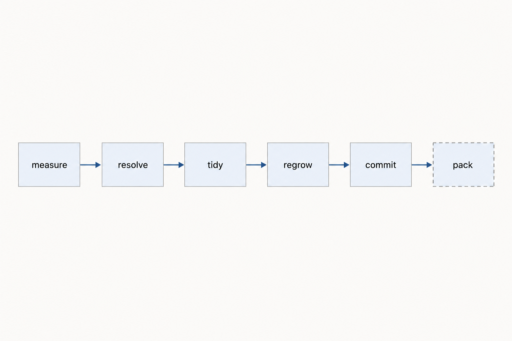
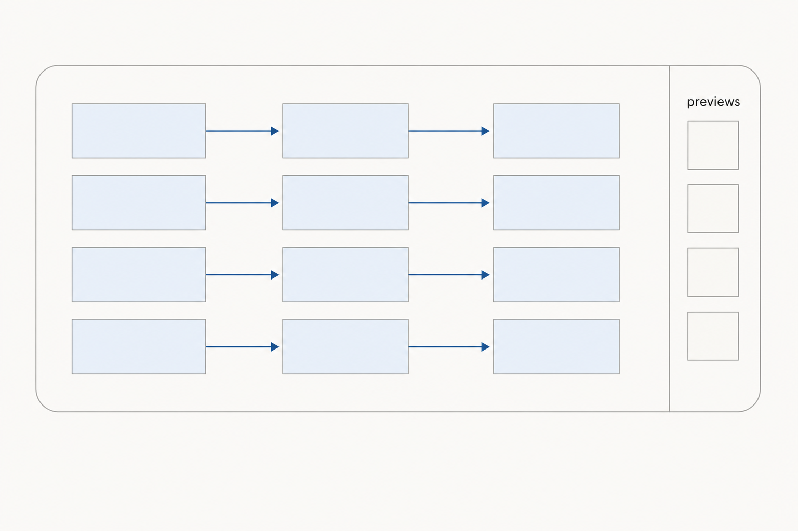
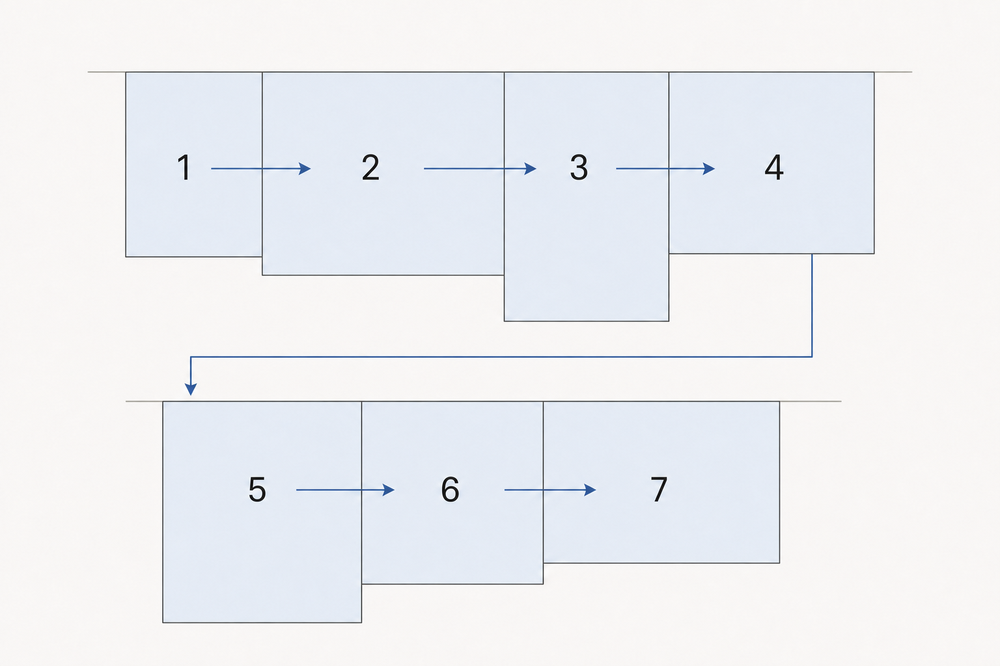

Arrange workflow
Purpose
- One right-click and the canvas tidies itself: nodes stacked by flow inside the groups you already drew, boxes grown to fit.
- Your groups are the answer — 104 of 119 nodes already sit in exactly one, none in two. Nothing re-clusters, nothing renames.
- The rgthree bypasser rows cannot move, because the first pass never moves a group.
- No model in the loop. Same click, same result, every time.
Flow
measure the canvas > hop the Set/Get wires > tidy inside each group > regrow the boxes > check, then commit > pack the boxes into shelves

Expect this: the boxes get bigger. Group boxes go from 10 to roughly 26 million px² — your canvas is 23.7% full today, and tidy means the boxes finally match what is inside them.
Stages
1. Measure the canvas
- In the graph on screen.
- Does asks every node for its drawn footprint, not its stored size — that is the only way the 34 collapsed Set/Get read as title bars instead of full boxes. Then freezes two facts: which node belongs to which group, and the order the Fast Groups rows are in right now.
- Out a rectangle per node, a membership map, a row-order fingerprint.
- Why here both frozen facts are what the result gets graded against at the end. Measured after, they would just agree with whatever happened.
2. Hop the Set/Get wires
- In the links table, plus every Set node, Get node and hub slot name.
- Does builds the real edge list. A Get is joined to the Set that publishes its name, and a hub's slot to the hub slot that reads it — per slot, so one hub stands in for twenty pairs.
- Out one edge list where the graph is 8 islands instead of 21.
- Why here every existing tool skips this and sees your Set/Get as unconnected litter. It is the whole reason none of them work on your canvas.
3. Tidy inside each group
- In one group's members and the edges between them.
- Does sorts them into columns by how far down the flow they sit, orders each column to un-cross the wires, and seeds that order from where they are today so the result still reads as your workflow. Previews go to a rail down the right edge at their producer's height.
- Out a position per node, snapped to your 100px grid.
- Why here 96 of your 128 wires stay inside one group and only 2 cross. Almost all the mess is intra-group, so almost all the fix is too.

4. Regrow the boxes
- In the new node positions.
- Does each box keeps its top-left corner exactly where it is and grows right and down until it holds its members. The corner is never written.
- Out 13 boxes that fit, in the 13 places they already were.
- Why here rgthree reads its row order straight off group position. Leaving the corner alone is not a guard against reshuffling your bypassers — it makes reshuffling impossible.
5. Check, then commit
- In the whole proposed layout, still as numbers. Nothing has moved yet.
- Does four tests against the frozen facts: no node overlaps another, no node changed group, no box swallows another box, row order identical. All pass and it writes in one undo step. One fails and you get a message and an untouched canvas.
- Out the arranged graph, plus a snapshot of where everything was, saved inside the workflow.
- Why here autosave writes a second after the click and undo here reloads the whole graph, which tears down every panel this pack draws. Its own Restore row is the safe way back.
6. Pack the boxes into shelves second click
- In the 13 tidied boxes and their frozen row order.
- Does lays them left to right on shelves, every box on a shelf sharing one top edge, a new shelf when the row runs long. Shelf by shelf, in the order the rows are in today.
- Out a canvas with no gaps between groups and the same bypasser rows.
- Why here shelves are the one packing shape where rgthree reads the order back unchanged by construction. Any solver that places boxes freely reshuffles the rows you click.

7. Stack and align, by hand separate key
- In whatever you have selected.
- Does reads which way the selection is spread, lines up that leading edge, makes the widths match the widest, spaces them evenly, everything on your grid. Skips collapsed nodes when matching widths.
- Out a clean stack, in one undo step.
- Why here independent of the chain above. It ships first because it is small and it is the thing you reach for a hundred times a day.
Check
- Measure the canvas: the 34 collapsed Set/Get report as title bars, not full boxes.
- Hop the Set/Get wires: the edge list joins into 8 islands, not 21.
- Tidy inside each group: 105 overlapping pairs go to 0, and the 33 nodes hanging outside their box are inside it.
- Regrow the boxes: every group corner is at the same coordinate as before the click.
- Check, then commit: run it twice — the second run moves nothing. One Ctrl+Z, or the Restore row, puts the old layout back.
- Pack the boxes into shelves: the three Fast Groups nodes list their rows in the same order as before.
- Stack and align: every coordinate lands on 100, nothing overlaps, pinned nodes did not move.
Handoff notes for implementation
- Do this first, 5 minutes, independent of the build — set
sorttocustom alphabeton his three Fast Groups nodes (4110render-engine, 3818edit-sketch, 4282save-high) and fillcustomSortAlphabetwith today's order. Pins rows to names permanently and makes every later group move safe. - Where it lives — all of it in
web/js/find_node.js(1340 lines), as a secondregisterSymbioticaExtensionspec: a keybinding collision hard-refuses a whole spec, and it must not take Find node / Set Hub / Get Hub down with it. A newweb/jsfile never reaches the Modal sandbox. That file already ownsslotName(414),getLink(420, module-private — needsexport),graphScope(432),everyGraph(439),publishedNames(454),findSource(538),prependCanvasMenuItem(224) and the pack's only command+keybinding (240–251). - Menu rows —
Tidy groups (Symbiotica)ctrl+shift+9,Pack groups (Symbiotica),Restore previous layout (Symbiotica), plusTidy this groupon the group menu via the samePATCHED-marker monkeypatch. Labels carry(Symbiotica)because pysssss'sgraphArrange.jsalready puts Arrange (float left/right) on that menu and both are group-blind — one click flattens all 13 groups. - Footprints —
node.updateArea(ctx)with a 2d context, then readnode.boundingRect. Per-frame cache, not a getter: read it after aposwrite and you get the stale box. Only path that gets collapsed nodes right (~210×30, not the 300×100 insize). - Membership —
recomputeInsideNodes()once, then record node → group by group id, not index (it sortsgraph.groupsin place). Membership iscontainsCentre, so 40px of drift silently moves a node between groups — and 36 of his nodes are muted or bypassed, so drift changes what runs. That is why membership diff is a hard check. - Layout core — longest-path layering (Kahn) with greedy back-edge reversal as a guard, sink-pull pass, barycenter ordering 8 sweeps seeded from current Y (what makes it idempotent and recognisable), one median straightening pass. 40px within a layer, column advance = layer max width + 120. Gets pinned to layer 0, Sets to the last layer. Preview rail takes the 16 PreviewImage + 7 Image Comparer + 5 PreviewAny — 50 of the 105 overlapping pairs involve one.
- Ungrouped nodes, in order — (1) Fast Groups Muter/Bypasser never joins a group, by type not geometry (3818 sits flush at the y where
edit-sketchstarts, so an overlap test misses it); keeps its offset against the group it sits over. (2) Set/Get hop places the hub orphans. (3) unanimous neighbours join that group, split neighbours sit between the two — that isAny Switch 3814. (4) the rest form a head block above the first shelf, current relative order kept. - Never written —
node.size(22 DOM panels; Recipe 900×1000, Task 900×800, Set task-specs 300×800 — writing panel heights is this repo's most expensive bug class),mode, titles,properties, widget values,flags.collapsed, link ids. Refuse to run for 500ms after a graph load so panels have settled. Pinned nodes and groups skipped by our own test — thepossetter has no pinned check, contrary to what every layout tool assumes. - Writes —
node.pos = [x,y]via the setter, nevernode.move()(returns early undervueNodesMode), bracketed inemitBeforeChange()/emitAfterChange()in try/finally, thensetDirtyCanvas(true, true). Undo snapshot{id → pos}+{group → pos+size}intograph.extra.symbiotica_arrange_undo, which serialises with the workflow (Comfy.Workflow.AutoSaveis"after delay"in his settings). - Stack and align — command
Symbiotica.StackAndAlignon shift+A,targetElementId: "graph-canvas"so it does not fire from a textarea, plusgetSelectionToolboxCommandsfor the toolbox button. Grid read at call time viaapp.canvas.graph.getSnapToGridSize()(his: 100,pysssss.SnapToGrid: true), falsy → skip rounding. Write withnode.setPos. He already has edge-align on shift+arrows from comfyui-easy-use (EasyUse.Hotkeys.AlignSelectedNodes) — this adds the stack, which nothing has. - Tests —
tests/js/comfy_stub.mjshas noLGraphGroup,updateAreaorboundingRect(0 hits); all three needed. Newtests/js/arrange.test.mjswith fixtures cut frombakery-base-arrange-test.json; tests do not ship so a new file there is free. Neverassert.equaltwo stub DOM elements. - Verification — spare ComfyUI on 8189 with his real file, playwright. 105 overlaps → 0, membership diff 0, rgthree rows read off the live nodes, Restore, second run moves nothing. Local frontend is 1.52.7; his Modal editor saved this file on 1.53.6, so no version-pinned API.
- Rejected — phazei/ComfyUI-Enhancement-Utils (closest fit: dagre/ELK, lays out in groups, resizes boxes, skips pinned groups) builds edges from
graph.linksonly, and its group pass is dagre over group blocks so row order comes out of a solver; faking Set/Get links intograph.linksmutates his graph, because KJNodes'onConnectionsChangerenames slots on connect.phineas-pta/comfyui-auto-nodes-layouttells you to delete your groups first;shootthesound/comfyui-CleanFreakcallsdeleteAllGroups(); ComfyUI-Align / NodeAligner / NodeAlign are selection align, not layout. No ComfyUI-Manager on his local install anyway. Haiku rejected — the semantics are already in his groups, the one ambiguous node resolves deterministically, and the one job a model is good at (naming groups) is forbidden: rgthree'smatchTitleis a case-insensitive substring regex, so an invented title can silently join atoggleRestriction: "always one"family and change what executes. - Effort — Phase A (stages 1–5) 14h, Phase B (stage 6) 9h, stack and align 8.5h. Subgraph interiors are a later 1h pass over
graph.subgraphswitheveryGraph; his 17 definitions hold 0 groups, so each degenerates to one block. - Reported, not fixed —
Image Comparer 4392overlapsrender-finalwithout being in it, so bypassing that group leaves it running. One line in the toast.